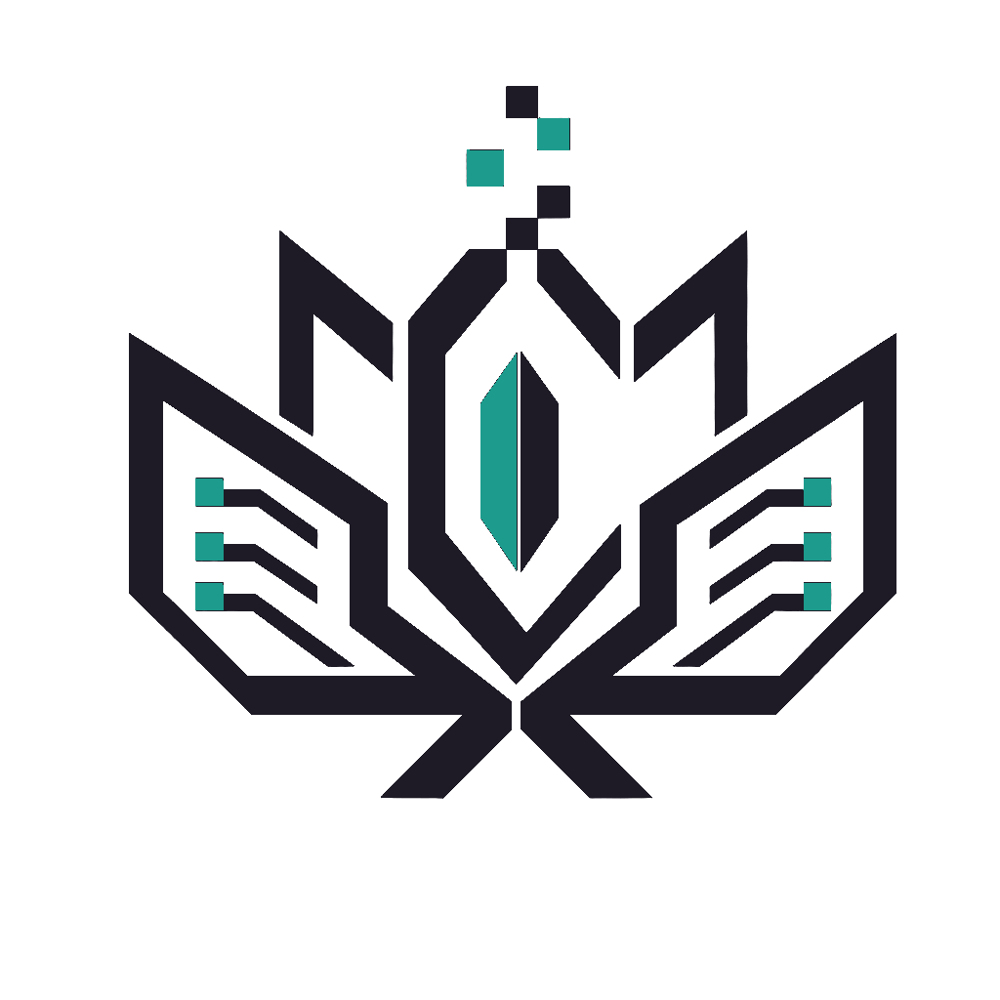
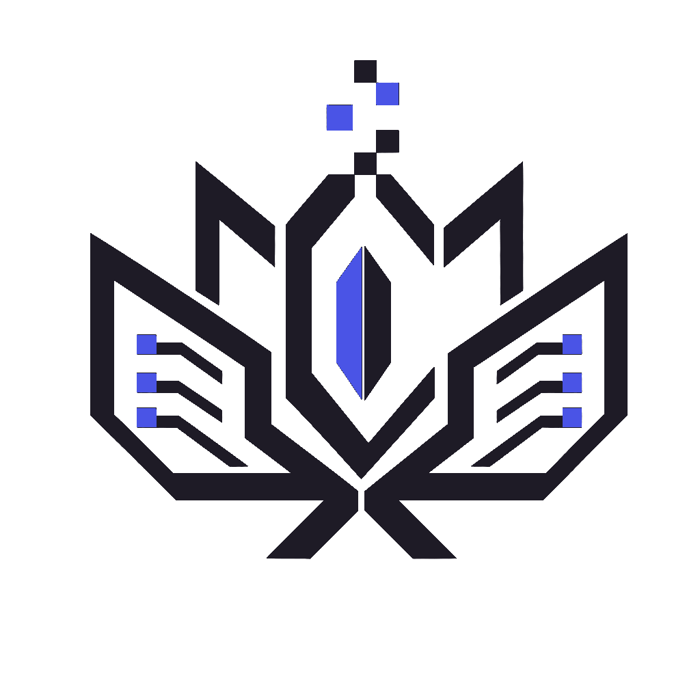

LumenXStudio
Full Atelier
atelier-dark · ★默认
暖石墨底。蓝 PNG 经 hue-rotate(−64°)+saturate 着色为 teal，与主色一致。
CSS FILTER → TEAL
切主题时 Logo 一并切换。规则分三类：暗 teal 主题用 CSS filter 把品牌蓝 PNG 着色为 teal；暗蓝主题用原蓝 PNG；亮色主题用深描边 PNG。文字色与 “X” 强调色全部走主题 token，杜绝白底白字。
// 每格独立渲染对应主题底色 + Logo 变体 + wordmark 配色


src="/Yunspire-cybr.png" 且 “LUMEN” 用 text-white —— 亮色下白底白字不可读，必须改造。src：暗主题 → /Yunspire-cybr.png（白描边）；亮主题 → 各自亮色 PNG（均由暗色 Logo 同形重着色，透明底）。atelier-dark 加内联 style={{filter:'hue-rotate(-64deg) saturate(1.35) brightness(1.08)'}}，其余 none。text-white 改为 var(--color-text-primary)；“X” 从 #646cff 改为 var(--color-primary)。atelier-light 用 logo-light-teal.png（深墨描边 + teal 核心）；brand-light 用 logo-light.png（深墨描边 + 品牌蓝核心）。二者与暗色 Logo 同形，仅换色，已替换旧莲花图 Yunspire_亮色.png。